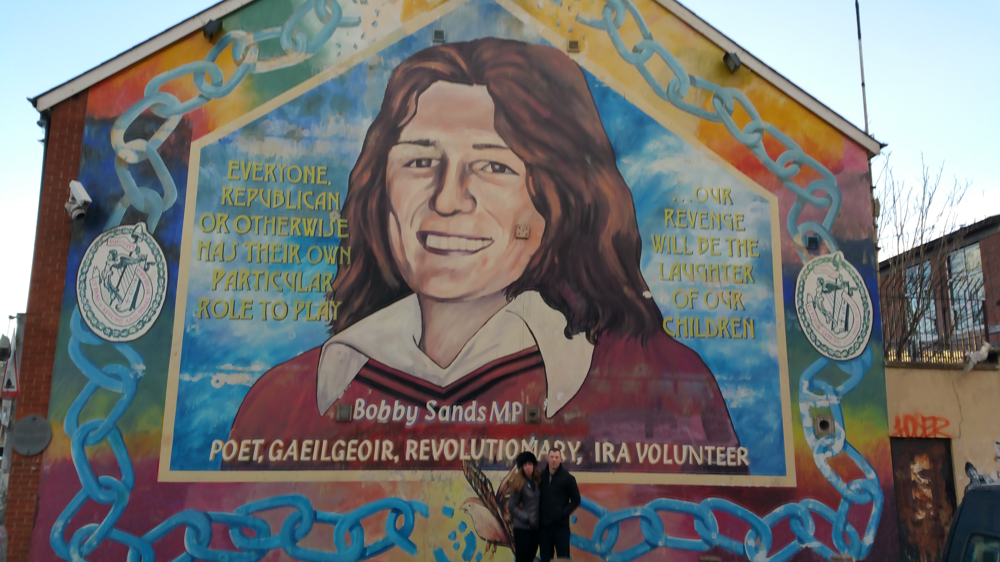
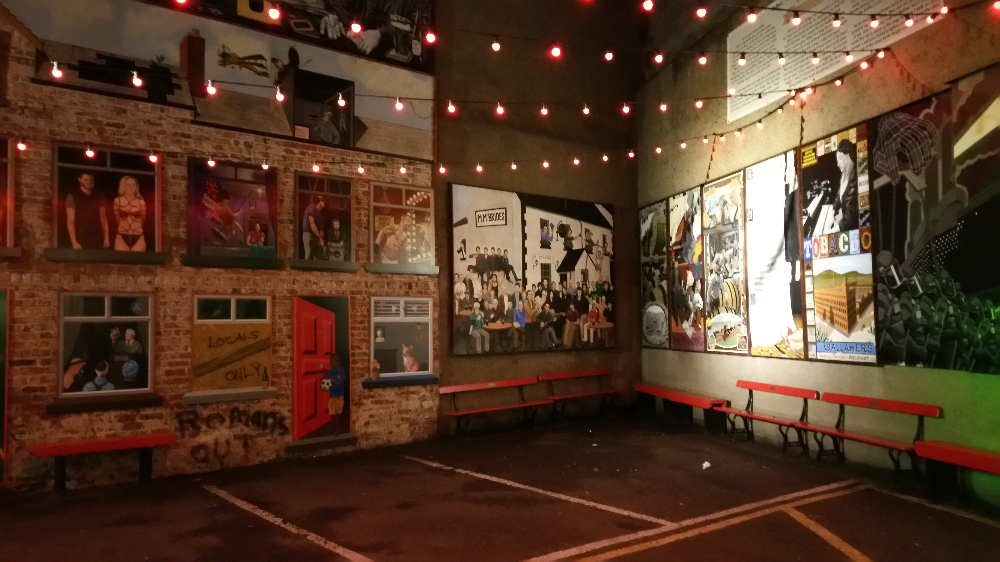
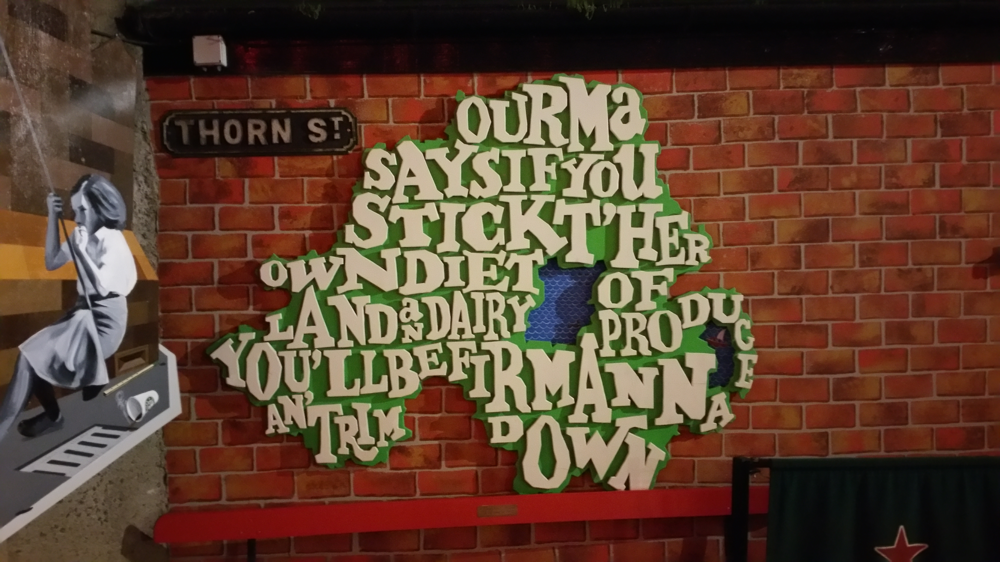
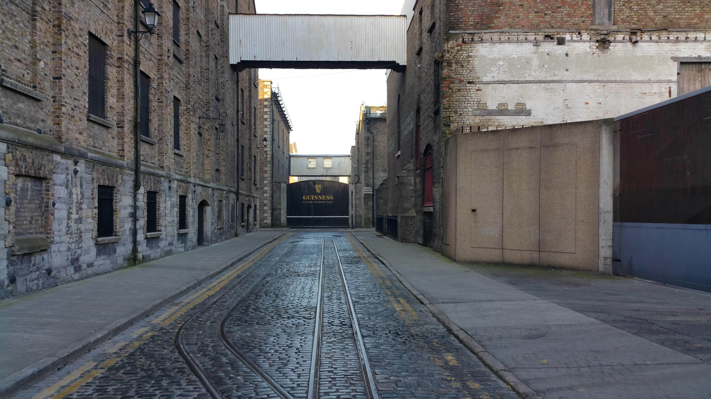
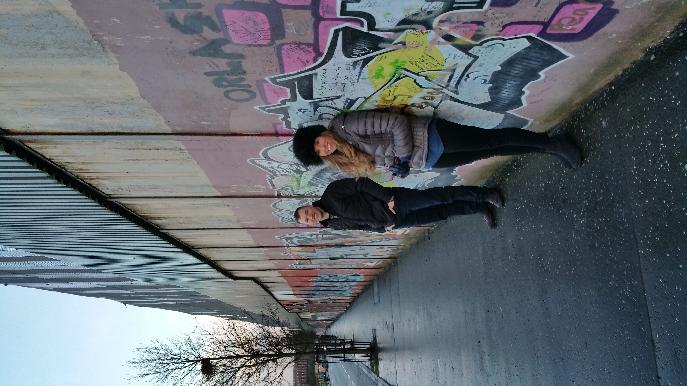

I grew up in a typical suburban family home...except for the weekly Clancy Brothers radio sessions, and my dad teaching us Irish drinking songs over family dinners, and that we couldn't wear orange on St. Patrick's day for some unknown reason. So of course, as soon as I was financially able, I made the pilgramage back to the Emerald Isle to learn a little about Ireland. Here are a few of my favorite photos from my trip.
Someday I'll go back again to Ireland...
A quick jaunt through my favorite pictures from Belfast and Dublin.

Belfast, Ireland is an artist's paradise. So many years of British occupation (or Irish rebellion, depending on who you ask) has bred a generation of people that have grown up in a modern, first world country constantly surrounded by spontaneous violence and struggle. And this sort of environment spawns some amazing pieces of self-expression. I found this mural on a random wall in Belfast as I walked through the city one day to buy a coffee. I think it might depict Bobby Sands holding a dove of peace, shot through the heart with the arrows of protestant and catholic extremism. Or it could just be a cool piece of art - who knows? Either way, I loved it.

This giant mural of Bobby Sands is painted on the side of the Sinn Fein headquarters building in Belfast. For those that don't know, Sinn Fein closely associated with the Irish Republican Army (labelled a "terrorist organization" by the British government), as it was with Sinn Fein support that the Northern Irish "rebels" (usually catholics) conducted bombings, beatings, killings, and intimidation of British citizens to try and sway the British government into cutting Northern Ireland loose from the commonwealth. However, Sinn Fein eventually realized violence would not be the way to accomplish its goals, so it turned itself into a political party and now pursues its goals through (mostly) legitimate means.

This amazing mural was outside a bar in Belfast, and it depicts dozens of famous people and events in a very satirical fashion. We had a local explain it to us, and he went through, window by window and character by character, explaining in a thick Belfast accent each event that occured and why it was important, funny, or just plain weird enough to be included in the mural. He also explained that many youth turned to art to express their creativity during The Troubles (the Northern Irish rebellion), but that the British government cracked down heavily on political expression, so the murals were a way for Irish youth to poke fun at the government in an "artsy" way without risking the wrath of the British police. (Of course, this explanation was given by a Catholic, so who knows?)

The pronounciation of the counties of Northern Ireland are a tongue twister even for someone that grew up hearing them referenced constantly in song, so I definitely appreciated this mural, and just like every other tourist has probably done, I stood in front of it and read each aloud phonetically as their Irish pronounciation donned on me.

The Europa Hotel has the dubious honor of being known as "The Most Bombed Hotel in the World." This is actually something that our cab driver in Belfast bragged about. Apparently, British officials would regularly visit Northern Ireland, and the IRA would plant bombs in and around the hotel in assination attempts. In the 90's, President Clinton and First Lady Clinton stayed in the hotel, which was a HUGE deal for Northern Ireland, and the US in general, as Northern Ireland was still getting over its "Troubles" and was not seen as a stable place for a sitting US President to visit.

Christ Church Cathedral in Dublin is quite the site to behold. My father grew up catholic, like the son of a good Irishman, and he likes to say growing up Catholic "makes or breaks you, and it broke me." Thus, I never really was exposed to the mixed opulance and starkness of Catholic cathedrals. The Cathedral of Christ Church in Dublin is full of amazing history that dates all the way back to 1028. The crypt underneath the church has a little cafe, which is weird but kind of cool, and I sat down there and had a coffee while marveling at the history that has occured on site over the last 1,000 years.

Much has been said about Jameson in my house growing up. My father used to tell a story about how his father refused to drink Jameson whiskey until Ireland was re-united again. Although the Old Jameson Distillery in Dublin no longer actually distills Jameson, it's still a beautiful building and an interesting tour that includes a taste test at the end between American Bourbon, Blended Scotch, and of course - Jameson Whiskey. I of course partook in a special pour for my dead grandfather. Slanche!

No trip to Dublin would be complete without a pilgramage to the Guiness Storehouse at St. James Gate, home of the Guiness brewery. One of the oldest brewerys in the world, the Guiness Brewery's claim to fame is its water rights, deeded to Arthur Guiness in 1759 for 9,000 years. Since clear water is an essential ingredient to any beer, the Guiness Brewery thrived, and has stood in the same place ever since. Our tour included a class on how to pour a proper Guiness, and a drink while enjoying a panoramic 360 degree view of Dublin.

So oddly - and tragically - enough, there's still a wall that divides Belfast city: the Catholics from the Protestants. See, the Catholics have a long history in Ireland (the story of St. Patrick) and were in Ireland for hundreds of years, converting the Celts from their druidic religions over to Catholicism - until England conquered Ireland, and Henry the 8th broke from the Catholic church to form the Church of England. Well, obviously the Catholics in Ireland didn't like that much, and to try and stabilize the province, the British settled as many Protestants as they could in Ireland. While I couldn't possibly summarize the rebellion in a short paragraph, suffice to say that loyalty to Catholicism and the idea of an Irish Republic and loyalty to the Crown and the British Commonwealth did no good bedfellows make. Fast forward to "The Troubles", and the British literally had to build a 60 foot high wall down the middle of the city to keep the revenge killings, bombings, sniping, and other mayhem in check between the two people. I'm standing here on the Protestant side of the wall - which our cabbie was quick to point out was dirty and covered in graffiti - and he offered me a permanent marker to sign my name and debase the Protestant side of the wall. Being the sun of a good Cathlic Irishman, I obliged.

Compare the graffiti-ridden wall on the Protestant side, to the clean, orderly, memorial wall on the Catholic side, and you can see the propoganda at work here. Our cab driver was Catholic, and a former IRA political prisoner, so there was definitely some bias involved in what he showed us, but I still found it fairly accurate that the Catholic side was much cleaner than the Protestant side of the wall.